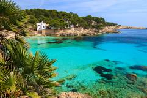
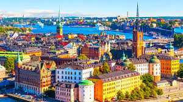

Viajar a Mallorca

Mallorca es una isla española situada en la parte central del archipiélago balear, en el mar Mediterráneo. Su capital, y también la de la comunidad autónoma de las Islas Baleares, es Palma de Mallorca,1 siguiéndola en importancia los municipios de Calviá, Inca y Manacor. La isla de Cabrera y todos sus islotes pertenecen administrativamente a la capital.
LEER MÁS
Viajar a Londres

Londres és la capital i ciutat més poblada d'Anglaterra i del Regne Unit. La ciutat, situada a la riba del Tàmesi, al sud-est de l'illa de Gran Bretanya, ha estat un nucli urbà important des de fa gairebé 2.000 anys, quan fou fundada pels romans amb el nom de Londinium.
LEER MÁS
Viajar a Suecia

Suècia, oficialment el Regne de Suècia, és un país nòrdic de la península escandinava a l'Europa septentrional. Suècia té fronteres terrestres amb Noruega a l'oest i amb Finlàndia al nord-est, i està connectat amb Dinamarca pel Pont d'Öresund al sud.
LEER MÁS